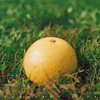

strange music page
japanese stange music * * * female vocals
#一回ライヴ見て以来、はまりっぱなしです。
歌モノにこんなにはまるのは久々かな？
なんていうか空気を変えるような力を持ってます。
イノトモのホームページ
|
|
#えと、ビタミンウォーターのCMの人、何飲もっかな、ビタミンウォーター♪って歌ってる人です。このCMしばらく小川美潮さんだと勝手に思ってたら実は違ってて(よしみさんゴメンナサイ、bbsにウソ書いちゃって)、そいでちょっとあまりにも好きな声だったので購入。渋谷バナナレコードで1,000円です。
音はやっぱり想像通りでした、アコースティックでゆったりした心地良い音。日曜日の昼間の布団の中みたいな音。(1999.5.22)

- キミとボクのフルサト
- キミとうたった歌
- 夜明け前
- 愛のコロッケ
- 孤独な地球
- そこからの光
- 溶けてゆく午後
- 無題
- まるい空気
- あの夏
- グレイプフルウツ
- シロツメ草
- イノトモ (guitars,vocals,harmonica)
- 梶山祐司 (guitars,drums)
- 伊賀航 (bass)
- スパン子 (organs,piano)
- まつ吉 (drums,percussions)
- 田中光栄 (harp on 2.)
- 佐々木一也 (drums on 4.)
- 平泉光司 (guitars)
- 加瀬達 (wood bass)
- 羽仁知治 (piano on 8.)
- 渡嘉敷祐一 (drums on 8.)
- キンドー (accordion on 8.)
CROWN: CRCP-20196 (1998.11.6)
#えーと渋谷BANANA RECORDにてー、\300。マキシです。でもアルバム未収録は1曲だけでした。
最近結構はまってます、最初聴いたときはそんなに好きでもなかったんですけどね。なんだかギターとかとっても70年代っぽいんですよね、はっぴいえんどとかマキ&OZのバラードとかそんな感じのギターです。とってもシンプルな曲なんですけどね。
でもなんだかこの人外見と歌詞と音と名前がなんかちょっとずつズレていて。見た目なんか最近のちょっとイケてないギャルみたいな感じで、名前も"イノトモ"なんて良くわからない名前なのに、音はすごい素直だし、でも歌詞よく読むとあんまり明るい歌ないし。でもそーゆー隙間みたいな所が魅力なのかもしれないですけど。
あと、今気付いたんだけどレコード会社がクラウンっつーのもなんとも。(1999.7.11)
- 愛のコロッケ
- 現実逃避
- まるい空気
- イノトモ (vocals,guitars)
- 梶山祐司 (guitars on 2.3.)
- スパン子 (electric piano,organ on 1.)(accordion on 2.)
- 伊賀航 (bass on 1.2.)
- 佐々木一也 (drums on 1.)
- 平泉光司 (guitars on 1.)
- まつ吉 (drums on 2.)
NIPPON CROWN: CRCP-13 (1998.8.26)
#シングル、新しいアルバム出るの待ちきれなくなって、買っちゃいました。ちょっと前のライヴ行き損ねてくやしいのもあったので。
最近こんなのばっか気に入っちゃう自分もどーかと思うんですけど。優しくて暖かい音、ちょっぴり後ろ向きな歌。最近ほんとに個人的なCDの買い方、こーゆーの聴きたくてしょうがなくって。(2000.1.9)
- 春風のゆううつ
- 風の行方
- むかえにゆくよ
- イノトモ (acoustic guitars,vocals)
- 梶山祐司 (electric guitars on 1.2.)
- スパン子 (rhodes on 1.)(accordion on 2.)(piano on 1.3.)
- 伊賀航 (bass on 1.)(guitaron on 2.)
- まつ吉 (drums,percussions on 1.2.)
NIPPON CROWN: CRCP-18 (1999.4.21)
#サニーデイサービスの曽我部恵一さんがアレンジで参加の、マキシシングルです。ちょっぴりソフィスティケイト(ヤな単語ですけど)された感じと思いました。2曲目はほとんどイノトモ一人みたいな曲です。
なんだか笑っちゃうくらいにシンプルでそのまんまな歌が魅力なんで、まとまっちゃうのはどうかと思ったんですけど、結構バランス取れてて良かったです。ほんとフツーに売れちゃっても良さそうな曲なんですけどね。さてどーなるやら。(2000.1.28)
- 月と花
- 風が吹いていた
- 星と花 (真夜中バージョン)
- イノトモ (acoustic guitar,slide guitar,drums,vocals)
- 伊賀航 (bass on 1.)
- 高野薫 (organ,piano on 1.)(pianobass on 3.)
- 平泉光司 (electric guitar on 1.)(acoustic guitar on 2.)
- 曽我部恵一 (chorus on 1.3.)(vibraphone on 3.)
- 桜井慎一 (conga on 1.)
- まつ吉 (tambourine on 1.)
NIPPON CROWN: CRCP-28 (1999.12.16)
#えーととにかく一曲目、最近繰り返し聴いてます。サニーデイの次はネタンダーズとの共演です、最近活動が活発になりつつあるのかな？それにしても良い曲。(2000.3.25)
- タンポポ
- かわいたほね
- JEALOUS GUY
- イノトモ (vocals,guitars)(accordion on 2.)
- スパン子 (electric piano on 1.)(organ on 3.)
ネタンダーズ:
- 塚本功 (guitars)
- 松本まさし (trombone)
- 井上博之 (sax)
- 高野純一 (drums)
- 宮野達哉 (bass)
NIPPON CROWN: CRCP-32 (2000.3.23)
#待望の。
えーととりあえず今まで出てたマキシに含まれる曲はこの上参照。新録のほとんどは、
WORLD STANDARDの鈴木惣一郎さんプロデュースです。前作よりも他の人の要素分、幅が出てきたように思います。一曲一曲の良さは、好きすぎて書けないくらい。聴くだけで気分変わるような、ちょっと(とても)幸せな声。(2000.7.30)
- 星と花
- キミノウソ
- タンポポ
- 風の行方
- まあるい日々。
- 後悔
- 風が吹いていた
- 坂道
- 犬と一緒に
- あのころボクは
- むかえにゆくよ
arranged by 曽我部恵一,高野勲 (1.)
arranged by 鈴木惣一郎 (2.5.6.8.9.10.)
arranged by 塚本功 (3.)
arranged by イノトモ (4.7.11.)
- イノトモ (guitars,vocals)
- 伊賀航 (bass on 1.)(guitaron on 4.)
- 高野勲 (organ,piano on 1.)
- 平泉光司 (electric guitar on 1.)
- 曽我部恵一 (chorus on 1.)
- 桜井慎一 (conga on 1.)
- まつ吉 (tambourine on 1.)(drums on 4.11.)
- 高野純一 (drums on 3.)
- 塚本功 (guitars on 3.)
- 松本まさし (trombone on 3.)
- 井上博之 (sax on 3.)
- 宮野達哉 (bass on 3.)
- スパン子 (piano on 2.3.5.6.8.11.)(accordion on 4.8.)(organ on 5.)(celeste on 9.)
- 鈴木惣一郎 (drums,percussions on 2.5.6.8.9.10.)
- 梶山祐司 (guitars on 4.11.)
- 藤原マヒト (bass on 2.5.8.)(piano on 5.6.)
- 桜井芳樹 (guitars on 6.10.)
- 駒沢裕城 (pedal steel on 8.)
NIPPON CROWN: CRCP-20250 (2000.7.26)
#タワレコのコーナーの所に有って視聴も出来るようになってきてると言う事は、ちょっとずつ売れてきてるって事でしょうかね？一ファンとしては嬉しいです。
ホームレコーディングがメインのミニアルバムみたいです。前作の余りかどうかはわかりませんけど、鈴木惣一郎(world standard,everything play最近この人関係の好きなんですよね)さんとかが参加してます。
キレイキレイに録された音では無いです、なんだかこの21世紀直前に4tr.のMTR(そこまででは適当では無いと思いますけど)で録音されたような歌。ほんとに当たり前ですけど技術とか演奏力とかでは無関係な所で響いてる音の大切なこと。
どっかの掲示板で「21世紀に持っていきたい音〜」みたいな話が有りました、私ならこんな音です。(2000.12.25)
- 落ち葉の道
- 富士
- 夕やけ
- 消えないもの
- やさしい手。
- 冬の匂い
- 愛のコロッケ
- イノトモ (vocals,acoustic guitar,rhythm,harmonica)
- スパン子 (celeste on 1.)(rhodes on 4.)
- 駒沢裕城 (pedalsteel on 1.)
- 鈴木惣一郎 (percussions on 1.)
- 笛吹利明 (acoustic guitar on 2.)
- 平泉光司 (bass on 4.)(rhythm on 7.)
- 渡辺等 (woodbass on 5.6.)
- 四家卯大 (cello on 5.)
- 梶山祐司 (mandolin on 6.)
NIPPON CROWN: CRCP-20260 (2000.12.16)
#けっこう前作から間があいてたみたいですね、イノトモの新譜です。この間イノトモさんはお母さんになられたよーで、包み込むよーな（ちょと気恥ずかしい表現だな）歌声もますます。
肩肘張らないよーな、自然体の音楽。「自然体」なんてキャッチとしては簡単に書けちゃいそうな言葉だけど、21世紀にもなってこんな自然な感覚で存在しつづけてる事が奇跡なよーな気もします。
相変わらず何回でも聴きつづけてられるよーなCDです、ライヴも見にいこーと思います。(2003.5.28)

- いつかキミと
- かけらを探す
- カルピス
- 風
- 星降る夜
- 透明
- 夜
- すみれの花
- 恋のかぞえうた
- 幸せな一日の終わりに
produced by イノトモ
exective produced by BAN BAN BAZAR
- イノトモ (vocals,acoustic guitars)
- 平泉コージ (guitars on 1.2.7.)(piano on 2.)
- 梶山祐司 (guitars on 1.3.)(mandolin on 1.4.5.8.)
- 伊賀航 (bass on 1.3.4.5.6.9.)
- マツキチ (drums on 1.6.9.)(conga on 1.3.4.)(udu on 5.)
- 小島徹也 (drums on 2.)
- 中条卓 (bass on 2.7.)
- スパン子 (accordion on 4.)
- 塚本功 (electric guitar on 6.)
- 福島康之 (acoustic guitar on 9.)
- 富永寛之 (electric guitar on 9.)
- 杉浦琢雄 (piano on 9.)
HOME WORK: HW-001 (2003.5.25)